Точная диагностика
3D-томография, рентген и стоматологический микроскоп помогают увидеть проблему на раннем этапе и точно спланировать лечение.
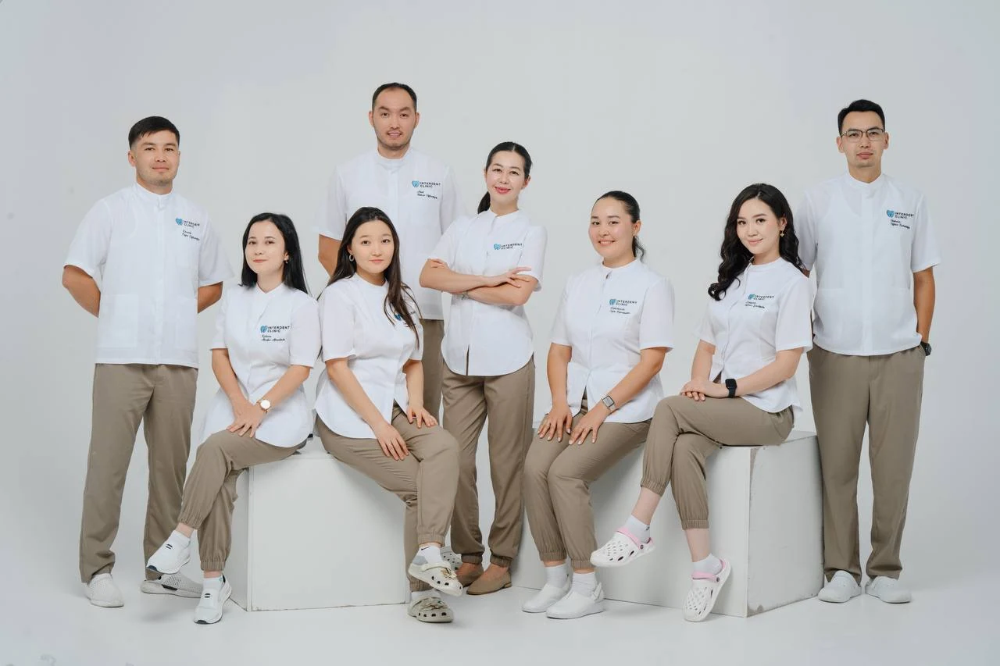
[ СТОМАТОЛОГИЯ ПОЛНОГО ЦИКЛА В АСТАНЕ ]
Имплантация, брекеты, лечение под микроскопом и все направления стоматологии в одной клинике.
Всё по одному адресу.
3D-томография, рентген и стоматологический микроскоп помогают увидеть проблему на раннем этапе и точно спланировать лечение.
Клиника работает 10 лет, у части специалистов опыт работы более 10 лет.
Терапия, хирургия, имплантация, ортодонтия, протезирование и гигиена — лечение в одном месте, без поиска других специалистов.
Импланты Straumann, Neodent, Izen, Dentium, DIO. Брекеты, расширители MSE, Hyrax и Марко Росса.
ЧЕМ МЫ МОЖЕМ ПОМОЧЬ
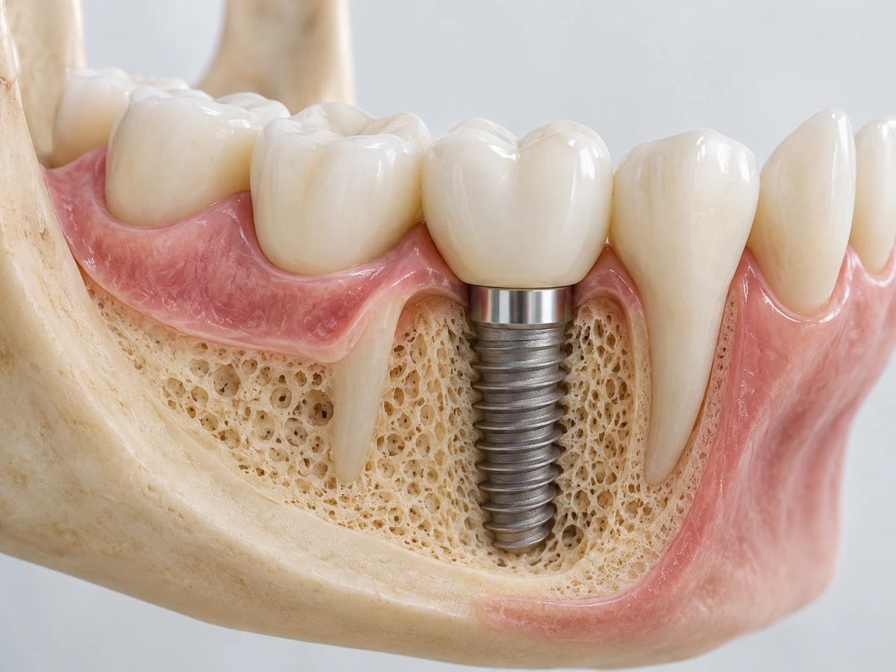
Имплантация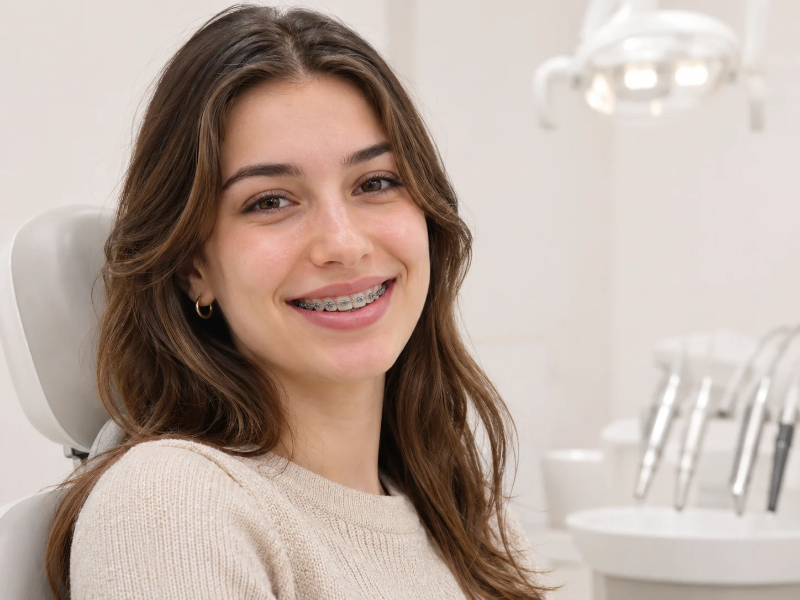
Ортодонтия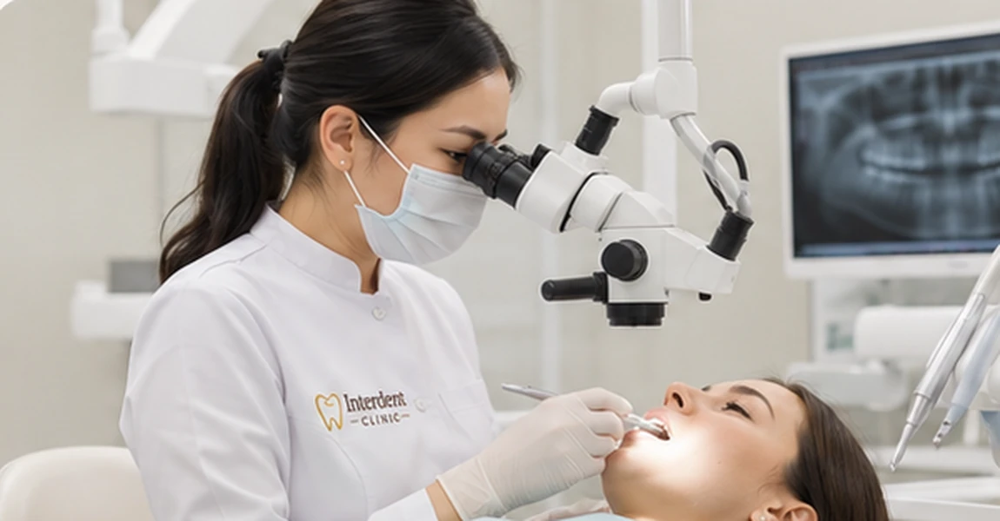
Терапия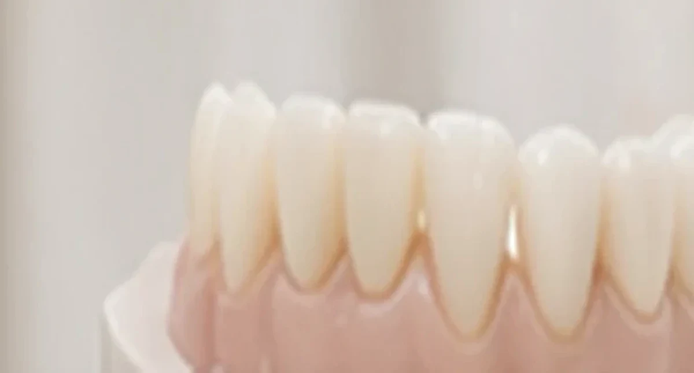
Ортопедия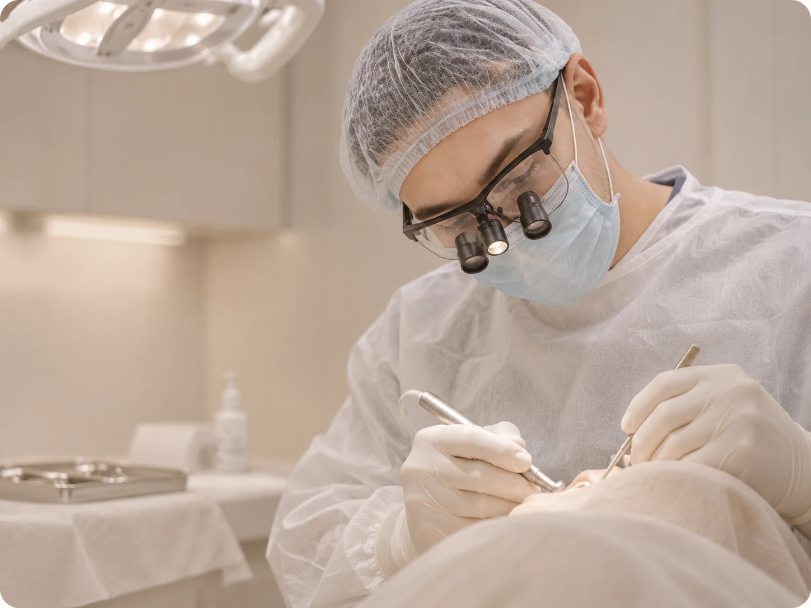
Хирургия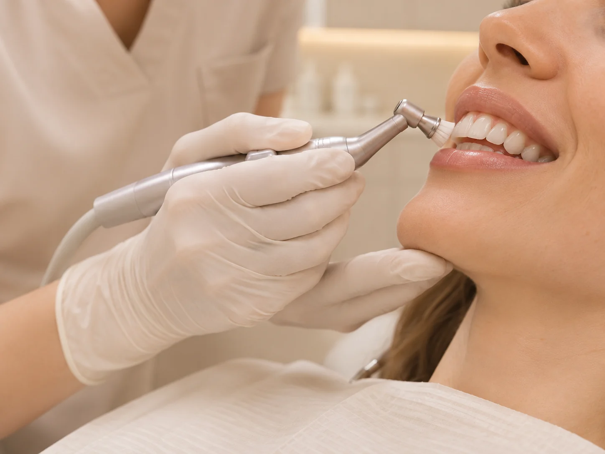
Гигиена и профилактика Гнатология
Гнатология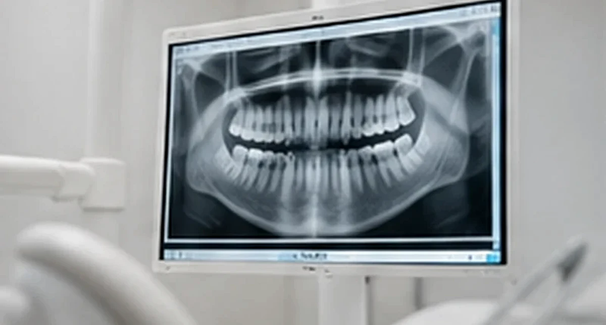
ДиагностикаINTERDENT CLINIC
Interdent Clinic — стоматологическая клиника в Астане. Мы работаем 10 лет и помогаем пациентам решать как базовые, так и сложные задачи: от лечения кариеса до имплантации, исправления прикуса и протезирования.
В основе нашей работы — точная диагностика. 3D-томография и стоматологический микроскоп позволяют увидеть проблему на раннем этапе и заранее составить план лечения.
В клинике принимают терапевты, эндодонтист, хирург, ортопед и ортодонт, поэтому лечение можно пройти в одном месте. Мы работаем с проверенными системами имплантов Straumann, Neodent, Izen, Dentium и DIO.
Если вас беспокоит боль или вы хотите улучшить улыбку, врачи Interdent Clinic подберут решение под вашу ситуацию.
Познакомиться с врачами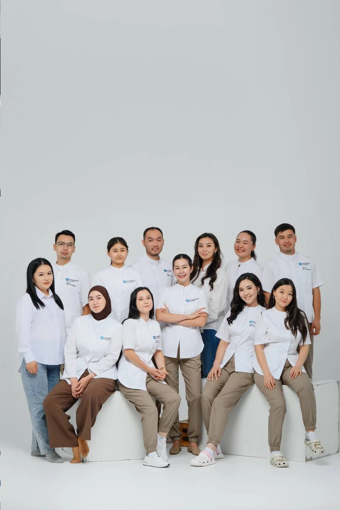
ВОЗМОЖНОСТИ ХИРУРГИИ
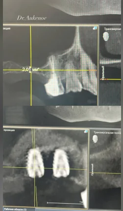
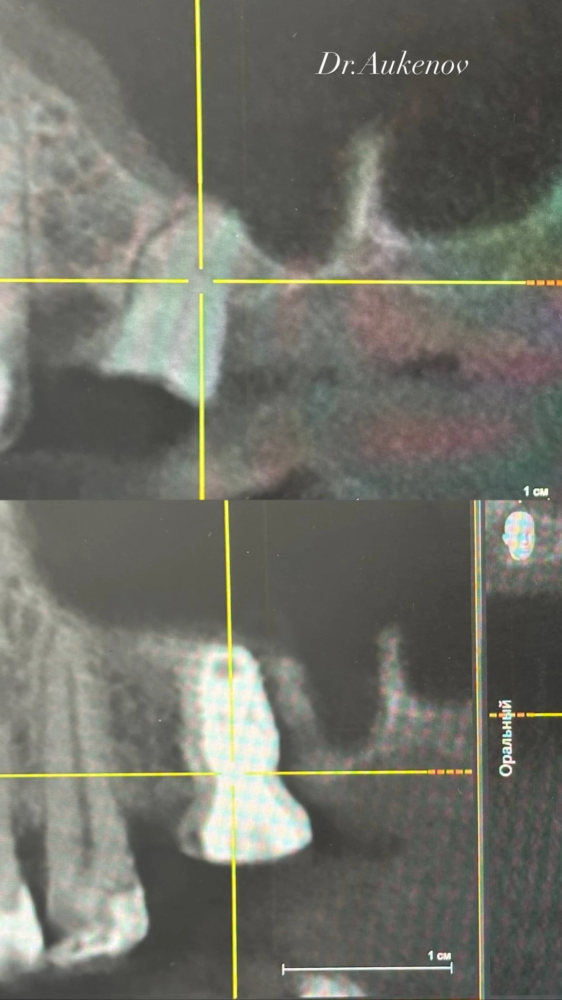
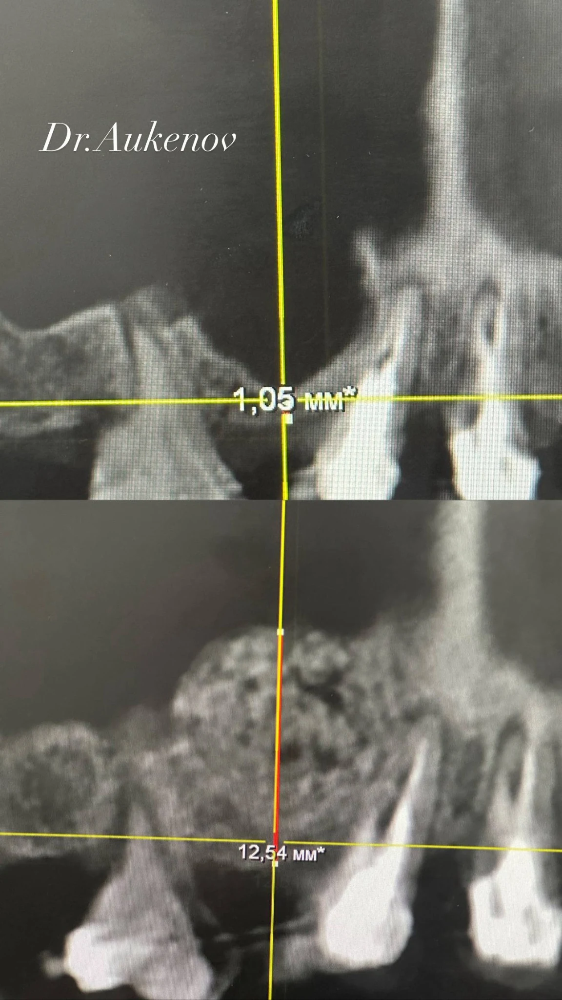
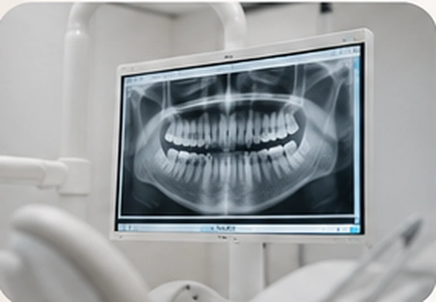
ЧТО СТОИТ ЛЕЧЕНИЕ
Основные позиции прайса Interdent Clinic. Стоимость и план лечения уточняются после осмотра.
Стоимость All-on-4 / All-on-6 будет доступна в полном прайс-листе клиники.
Цены на лечение кариеса, пульпита и периодонтита указаны с учётом анестезии, коффердама и восстановления зуба.
КОМАНДА КЛИНИКИ
Познакомьтесь со специалистами, к которым вы придёте на приём.

Стоматолог-хирург
Опыт: с 2015 года

Стоматолог-ортопед
Опыт: более 10 лет
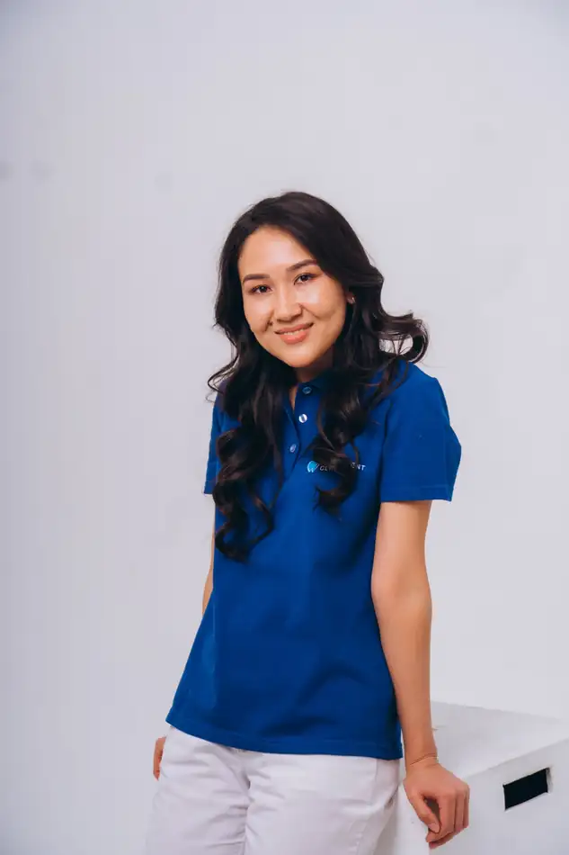
Стоматолог-ортодонт
Опыт: с 2014 года
Терапевт, эндодонтист, микроскопист
Опыт: с 2023 года
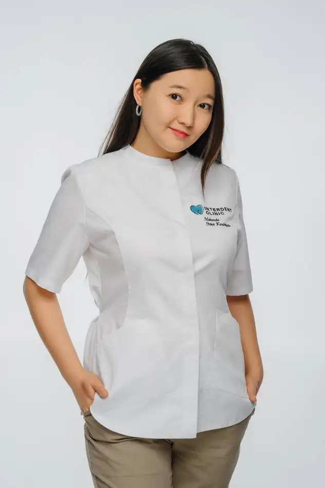
Стоматолог-терапевт
Опыт: с 2020 года
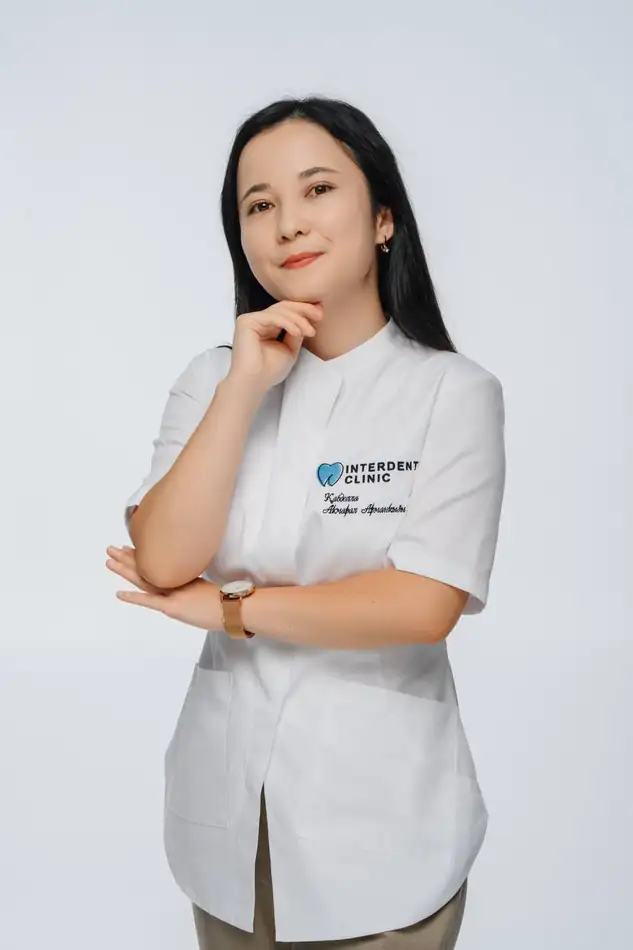
Стоматолог-терапевт
Опыт: с 2020 года
Стоматолог-терапевт
Опыт: с 2026 года
Опыт: с 2015 года
Опыт: более 10 лет
Опыт: с 2014 года
Опыт: с 2023 года
Образование: Медицинский университет Астана (бакалавриат «Стоматология», интернатура)
Дополнительное обучение: Сертификаты по первичному и повторному эндодонтическому лечению
Опыт: с 2020 года
Образование: Медицинский университет Астана (2014–2020)
Опыт: с 2020 года
Опыт: с 2026 года
ГОВОРЯТ ПАЦИЕНТЫ
ОФИЦИАЛЬНАЯ ИНФОРМАЦИЯ
Лицензия и документы о регистрации юридического лица доступны для просмотра.
Медицинская деятельность ведётся по лицензии № 23009225. Приложение на стоматологию оформлено для адреса в Астане, ул. Кенесары, 52.
Открыть лицензию (PDF) Справка о регистрации (PDF) Қазақша анықтама (PDF)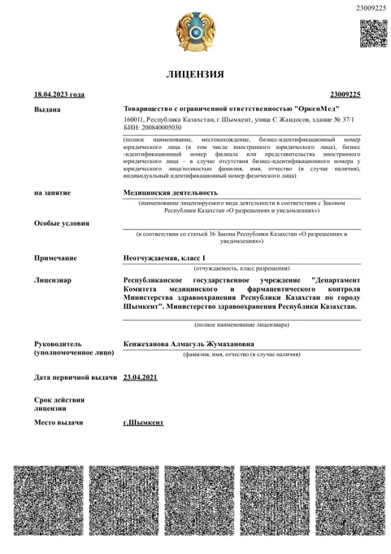
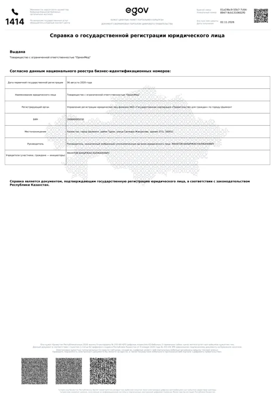
ЖДЁМ ВАС
Лицензиат: ТОО «ОркенМед», БИН 200840005030. Лицензия на медицинскую деятельность от 18.04.2023. Приложение №007 от 31.01.2024: стоматология, Астана, ул. Кенесары, 52.
Оригиналы документов, переданные клиникой, доступны для просмотра в формате PDF.